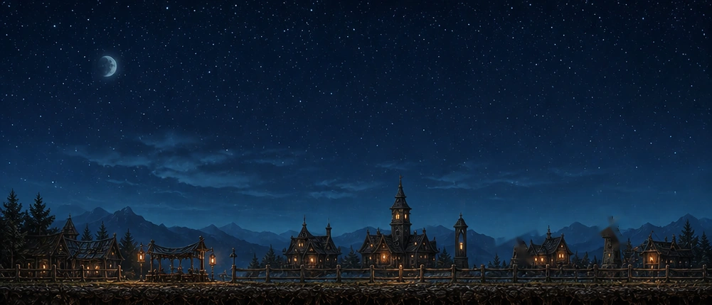
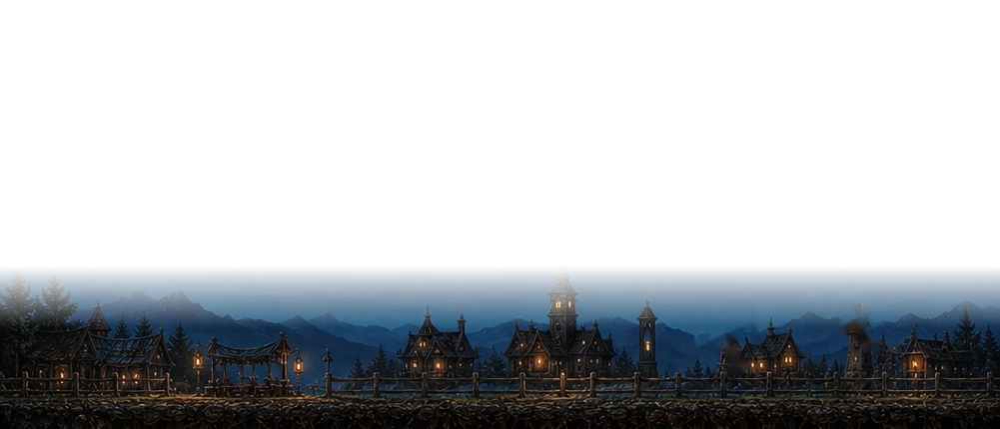
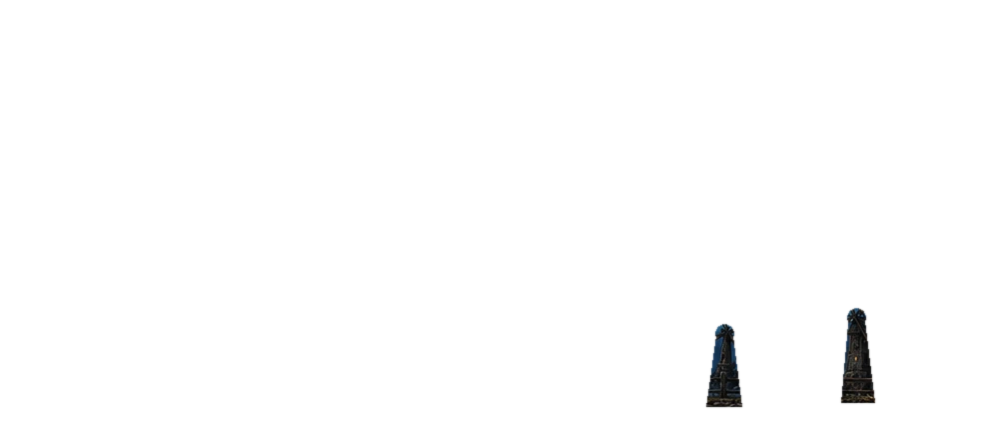

Weather VFX comparison · mockup only
Imagegen weather pass
The authored skyline stays exact while generated mini-assets replace the procedural weather drawings.



20:00 · Storm · Imagegen VFX · layered mockup only